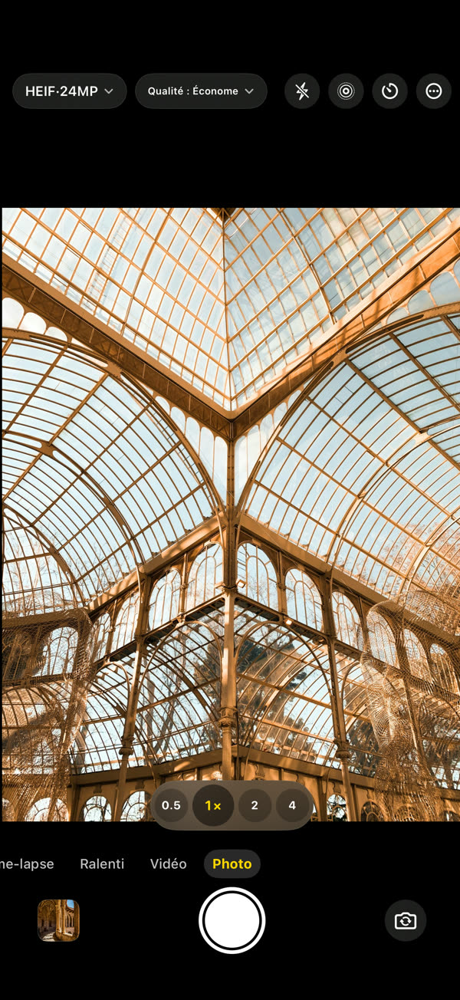
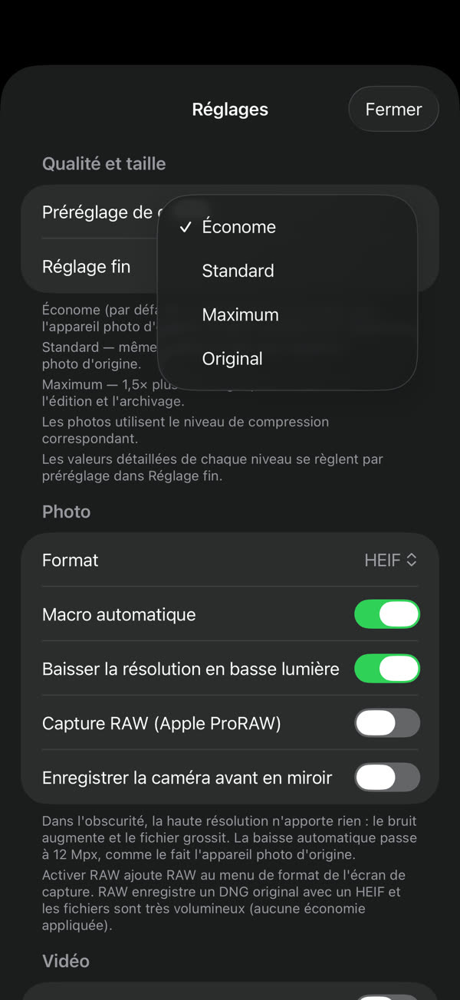
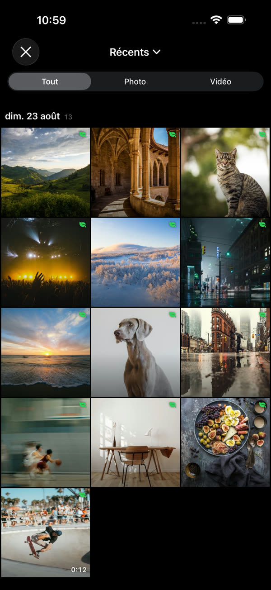
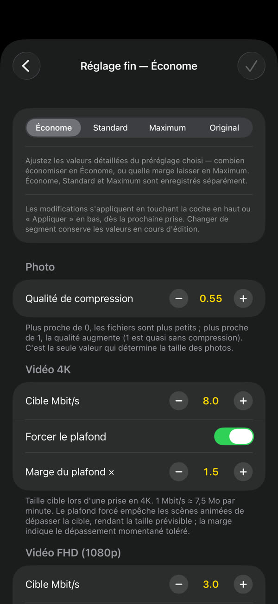
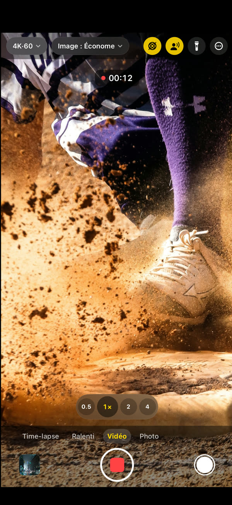

GramCamera
Même scène, fichier plus léger.
GramCamera photographie comme l'appareil d'origine, mais enregistre des fichiers plus légers. La taille baisse sans perte visible de qualité : le même stockage dure bien plus longtemps.
Télécharger dans l’App StoreiOS 17 ou version ultérieure · iPhone et iPad

À chaque prise, environ 60 % d’espace en moins.
Photo3,7 Mo → 1,5 Mo≈ 60 %
Vidéo 4K169 Mo → 60 Mo / min64%
Vidéo FHD60 Mo → 23 Mo / min62%
Choisissez, photographiez, voyez l’économie.




Tout ce qu’il faut, intégré.
Vous choisissez l'économie
Économe, Standard ou Maximum. Le réglage fin fixe la taille cible par résolution
Directement dans Photos
Aucune photothèque séparée. Vos prises vont dans l'app Photos du système
L'économie est visible
Chaque prise indique combien elle est plus légère qu'avec l'appareil d'origine
Un vrai appareil photo
Photo, vidéo, ralenti, time-lapse, 4K 60 i/s, vidéo HDR, audio spatial, objectifs et macro
Tout reste sur l'appareil
Vos prises restent sur l'appareil et dans votre photothèque. Ni compte ni connexion — Confidentialité